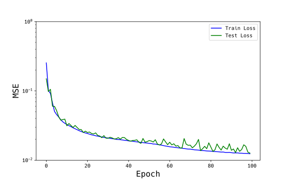

Deep Learning-Based Reduced Order Modeling
of Fluid Flow in 2D Bearing Cavity
State Key Laboratory of Tribology in Advanced Equipment and the Friction Forum 2025
November 5, 2025 at Tsinghua University in Beijing
Koji Kususaki*, Takashi Noda*, *NSK Ltd.
Contact: kususaki@nsk.com
---
What is NSK?
What is NSK?
A global leader in bearings and precision machinery components
What is NSK?
Committed to providing high-quality products and services to customers worldwide
---
Agenda
- CFD and AI
- DL-ROM
- Evaluation and Learning Model
- Results
- Achievements and Future Prospects
---
CFD and AI
CFD and AI
Application of CFD Analysis in Bearings

✔︎Desktop examination possible ✖︎High computational cost (day~week / 1s)
CFD and AI
Reducing CFD computational cost using AI
CFD and AI
Reducing CFD computational cost using AI

Pant P, et al. Deep learning for reduced order modelling and efficient temporal
evolution
of fluid simulations. Phys Fluids. 2021; 33(10):107101.
Learning fluid motion patterns and creating substitutes for governing equations
CFD and AI

Haixin Wang, et al. Recent Advances on Machine Learning for Computational Fluid
Dynamics: A Survey. arXiv:2408.12171 [cs.LG], 2024.
Besides the DL-ROM introduced today, there are various types of AI applications to CFD
---
DL-ROM
DL-ROM
Deep Learning for Reduced Order Modelling

Creating reduced-order models using deep learning
Pant P, et al. Deep learning for reduced order modelling and efficient temporal
evolution of fluid simulations. Phys Fluids. 2021; 33(10):107101.
DL-ROM
- Data: 3D grid with 2D space + 1D time
-
- Feature: Time evolution calculation
-
- Constraints: Fixed grid number
- Rectangular data shape
- Values exist inside boundaries
DL-ROM
- Input is 10 fluid snapshots
- → shape=(320×80×10)
- → compressed to vector with shape=(32)
- → expanded to shape=(320×80×1)
- → outputs 1 fluid snapshot
DL-ROM
Specific network architecture

(Convolution・Normalization・Activation function) × 5 → (Transposed convolution・Normalization・Activation function)
× 5
---
Evaluation and Learning Model
Evaluation and Learning Model
We targeted planar annular fluid simulating bearings. Calculations were performed using commercial CFD.
Evaluation and Learning Model

- Fluid: Single-phase Newtonian fluid
- Reynolds number Re: 400
- Output vorticity from commercial CFD
→ Normalized to mean 0, variance 1
- Interior boundaries filled with zeros
- Rotating coordinate system (fixed ball position)
- Cylindrical shape → rectangular data using polar coordinates
Evaluation and Learning Model
Training and test data split
- 800 out of 1000 snapshots for training, 200 for evaluation
- DL-ROM predicts 11th snapshot from 10 inputs
- In training, DL-ROM learns to match predictions
- In testing, we evaluate how well DL-ROM predictions match
- Evaluation metric: Mean Squared Error
$$\text{MSE} = \frac{1}{\text{Var}(\Omega_{\text{CFD},i})}
\frac{1}{N}
\sum_{i=1}^{N} (\Omega_{\text{CFD},i} - {\Omega}_{pred,i})^2$$
Evaluation and Learning Model
Training results

CPU: Intel(R) Xeon(R) CPU E5-2643 v4 @ 3.40GHz
GPU: NVIDIA GeForce GTX 1080 8GB / RAM: 100GB
Training time:
~10h /
Memory usage: ~100MB
---
Results
Fluid simulation by DL-ROM

- First 10 snapshots use test data
- → Predict 11th from 10 inputs
- → Add predicted 11th to input, predict 12th
- → Repeat this process to predict up to 35th
Results
Fluid simulation by DL-ROM
CFD results
(800min / 1s)
DL-ROM predictions
(3min /
1s)
Difference

$$\text{MSE} = \frac{1}{\text{Var}(\Omega_{\text{CFD},i})} \frac{1}{N}
\sum_{i=1}^{N} (\Omega_{\text{CFD},i} - {\Omega}_{pred,i})^2$$
Achieved 260× speedup
---
Achievements and Future Prospects
Achievements and Future Prospects
What was obtained in this study
- Applied DL-ROM to 2D bearing fluid
- Represented cylindrical space in polar coordinates
- Used convolutional NN for images
- Training evaluation conditions
- Reynolds number Re: 400
- Single-phase Newtonian fluid
- Represented interior boundaries with zero-filling
- Learned fluid vorticity
- Training results
- Predicted next time step from CFD input
- Achieved 260× speedup
Future prospects
- Application to 3D bearing fluid
- Non-Newtonian fluid and gas-liquid multiphase
- Representation methods other than zero-filling for interior boundaries